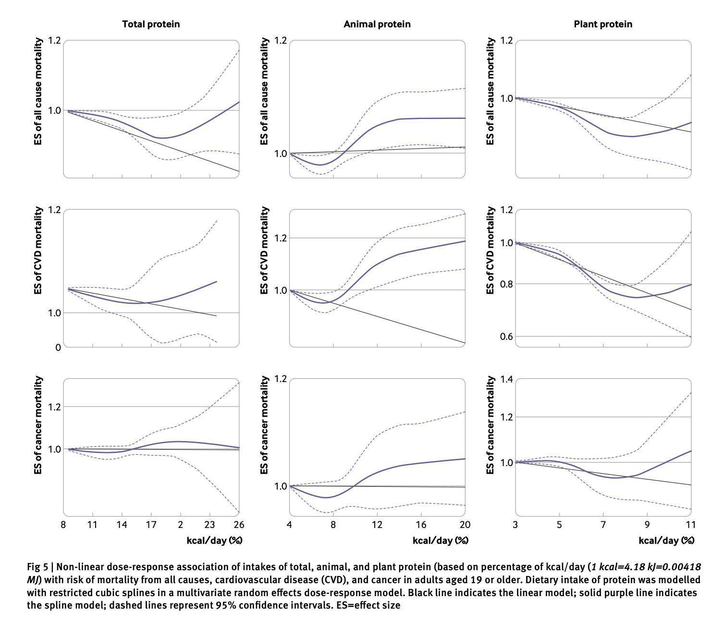

A friendly reminder. Please protect yourself (Wish this novavax thing was still available -- a bummer that I can no longer find it).
↪ Flu vaccination and mortality: the author's reading of the evidence
Reminder to get vaccinated, linking an earlier admin post. The shared summary lists the flu vaccine with 11-42% lower all-cause mortality in RCTs and prospective cohorts, 43% lower in consistent associations across 40+ studies, and 25-40% lower Alzheimer's risk, citing a cohort study and a systematic review and meta-analysis. Also notes Novavax (non-mRNA) COVID vaccine is no longer available to him.
A friendly reminder. Please protect yourself (Wish this novavax thing was still available -- a bummer that I can no longer find it).
↪ Flu vaccination and mortality: the author's reading of the evidence
Vaccines
Got my yearly flu vaccine yesterday. All around it's very protective for your immune system! The best way to strengthen your immunity is to not catch a disease, but instead strengthten it via dead microbes.
Added novavax (covid) vaccine for the second time to it. This is NOT mRNA. Traditional vaccine technology. Much fewer sides than mRNA. I love it that someone developed this vaccine! It doesn't have the trauma & worries that are associated with mRNA.
Flu vaccine (ref)
- [RCT] 11%-42% reduction in all cause mortality in RCTs and prospective cohort studies (ref, ref, ref).
- [Association] 43% reduction in all cause mortality, which was a very consistent finding across 40+ studies (ref, ref).
- [Association] All cause mortality was reduced in adults with diabetes (ref), hypertension (ref), cardiovascular disease (ref), cancer (ref).
- [Association] Lowered Alzheimer's risk by 25-40% (ref, ref).
[1] A Cohort Study on Influenza Vaccine and All-Cause Mortality in Older Adults (NIH National Library of Medicine)
Paper · Drugs Aging · 2022A Cohort Study on Influenza Vaccine and All-Cause Mortality in Older Adults: Methodological Concerns and Public Health Implications.Conclusion: In the current pandemic scenario, we cannot divert attention to proper use of face masks, social distancing, and hand hygiene, which are important measures to prevent influenza and other respiratory viral infections. Nonetheless, their effectiveness might be negligible without acceptable coverage for influenza vaccine, especially in older patients with a history of lower respiratory tract infections, whicpmc.ncbi.nlm.nih.gov[2] Effects of influenza vaccination on the risk of cardiovascular and respiratory diseases and all-cause mortality - A systematic review and meta-analysis (NIH National Library of Medicine)
Paper · Ageing Res Rev · 2020Effects of influenza vaccination on the risk of cardiovascular and respiratory diseases and all-cause mortality.Conclusion: Influenza vaccine is associated with a significant risk reduction of cardiovascular and respiratory adverse outcomes as well as all-cause mortality. Such a preventative measure can benefit the general population as well as those in old age and with pre-existing specific diseases.pmc.ncbi.nlm.nih.gov Paper · JAHA · 2022Flu Vaccine and Mortality in Hypertension: A Nationwide Cohort StudyBackground Influenza infection may increase the risk of stroke and acute myocardial infarction (AMI). Whether influenza vaccination may reduce mortality in patients with hypertension is currently unknown. Methods and Results We performed a nationwide cohort study including all patients with hypertension in Denmark during 9 consecutive influenza seasons in the period 2007 to 2016 who were prescribed at least 2…ahajournals.org Paper · J Am Heart Assoc · 2021Effects of Influenza Vaccine on Mortality and Cardiovascular Outcomes in Patients With Cardiovascular Disease: A Systematic Review and Meta-Analysis.Background Influenza infection causes considerable morbidity and mortality in patients with cardiovascular disease. We assessed the effects of the influenza vaccine on mortality and cardiovascular outcomes in patients with cardiovascular disease. Methods and Results We searched PubMed, Embase, and the Cochrane Library through January 2020 for randomized controlled trials and observational studies assessing the…pmc.ncbi.nlm.nih.gov Paper · J Alzheimers Dis · 2022Risk of Alzheimer's Disease Following Influenza Vaccination: A Claims-Based Cohort Study Using Propensity Score Matching.Conclusion: This study demonstrates that influenza vaccination is associated with reduced AD risk in a nationwide sample of US adults aged 65 and older.pubmed.ncbi.nlm.nih.gov[6] Flu, Pneumonia Vaccinations Tied to Lower Risk of Alzheimer's Dementia (Alzheimer's Association)
aaic.alz.orgLink to aaic.alz.orgaaic.alz.org
The author describes getting his yearly flu shot plus a Novavax COVID shot, then summarizes evidence that flu vaccination is associated with lower all-cause and cardiovascular mortality. Reported reductions come from both RCTs and cohort studies, though the post flags observational limits.

Summarizes a BMJ 2020 systematic review and meta-analysis of 32 prospective cohorts. Higher total protein was associated with slightly lower all-cause mortality, and plant protein with lower all-cause and CVD mortality, while animal protein had a minuscule effect up to about 20% of calories.

A 2020 Clinical Nutrition meta-analysis of 19 prospective cohorts (1,013,273 participants, 195,515 deaths) found polyunsaturated and monounsaturated fats associated with lower mortality, and saturated and trans fats with higher. Gokhan cautions that data guide rather than prescribe.
Louis shares a report on a JAMA Psychiatry nested case-control study from Karolinska Institutet. Long-term ADHD drug use was associated with 4% greater CVD risk per year of use, with the largest rise in the first three years, in children and adults, females and males. Hypertension and arterial disease drove most of the association, and stimulants were also linked. Observational, so association not proof of causation.

Argues that excess weight is the most important modifiable CVD risk factor, with lowest mortality at a BMI of 20-24. Lifestyle-driven weight loss of 5.5 kg was linked to 15% lower all-cause mortality in an RCT meta-analysis, and bariatric surgery to 38-41% lower mortality in observational pooled data.

A reading of the literature on what has worked best in clinical trials for human longevity, beginning with weight loss. Lifestyle weight loss lowered all-cause mortality 15% in RCTs, and bariatric surgery was associated with 38-41% lower mortality in observational data.